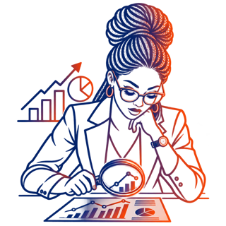
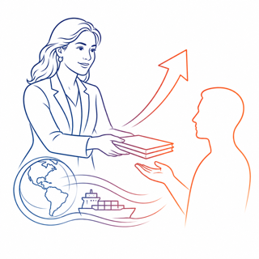

Empowering Women to Trade through Digitalisation: Policy Insights
Trade policies, initiatives and programmes that support women, including women-led MSMEs, in all trade-related aspects of digitalisation
About the Compendium
Launched at the WTO's Fourteenth Ministerial Conference (MC14) in Yaoundé, at a side event on 25 March 2026, the Compendium is a joint initiative of the Informal Working Group on Trade and Gender and the Informal Working Group on MSMEs. It was proposed in a joint communication of 27 February 2026 (WT/MIN(26)/4 • INF/TGE/COM/13/Rev.1 • INF/MSME/W/68/Rev.1) by the Co-Chairs of the Informal Working Group on Trade and Gender, Ambassador Ana Patricia Benedetti (El Salvador), Ambassador James Baxter (Australia) and Ambassador Clara Delgado (Cabo Verde), and the Coordinator of the Informal Working Group on MSMEs, Ambassador Matthew Wilson (Barbados). It supports the implementation of the IWG Work Plan 2025–2026 (INF/TGE/W/10/Rev.3) and the MSME Group Coordinator's Report (INF/MSME/W/64/Rev.1).
Objectives and ScopeMap policies, initiatives and programmes
The Compendium maps WTO Members' and Observer Governments' trade policies, initiatives and programmes focusing on supporting women, including women-led MSMEs, in all trade-related aspects of digitalisation, including e-commerce and trade in technology products.
Reflect Members' priorities
Its scope reflects Members' priorities and objectives. It covers trade policies that support women in digitalisation, such as export preparedness and support programmes and e-commerce and gender chapters in free trade agreements, as well as other policies that affect women's ability to engage in digitalisation and trade, such as education and skills training, workforce participation, access to technology, cybersecurity, e-payment systems and access to finance.
Reach women in all their diversity
It focuses on women entrepreneurs, including women-led MSMEs, and other groups such as women workers, young women, women-led start-ups, women in the green economy, indigenous women, women in rural areas and women farmers.
Bring in other WTO stakeholders
International and regional organizations, development banks, the private sector and other WTO stakeholders are invited to contribute information they have already collected on Members' policies, initiatives and programmes, and to add their own initiatives supporting women in digitalisation.
The Compendium draws on two lines of work: information already collected by Members and WTO stakeholders, such as the International Trade Centre, the International Telecommunication Union, the World Intellectual Property Organization, the Universal Postal Union and the Global Alliance for Trade Facilitation; and new information collected through a survey of WTO Members, Observer Governments and other WTO stakeholders. This database presents the survey responses, received between June and October 2026, verbatim.
Survey Themes
The survey for WTO Members covers six themes, plus a final question for additional comments, good practices and references. Other stakeholders answered a dedicated survey of twelve questions.


What the Responses Show
Six messages from the responses of WTO Members, each drawn directly from their answers, which are quoted as worded in the survey. Open the Compendium to read the explanations, examples and references behind them.
Insights from Other Stakeholders
Other WTO stakeholders were invited to share what they know about Members' policies, initiatives and programmes, and their own work to support women in digitalisation. International organizations and academia answered a dedicated survey on the measures governments have implemented, the partnerships, challenges and outcomes involved, and the lessons learned. In their own words: